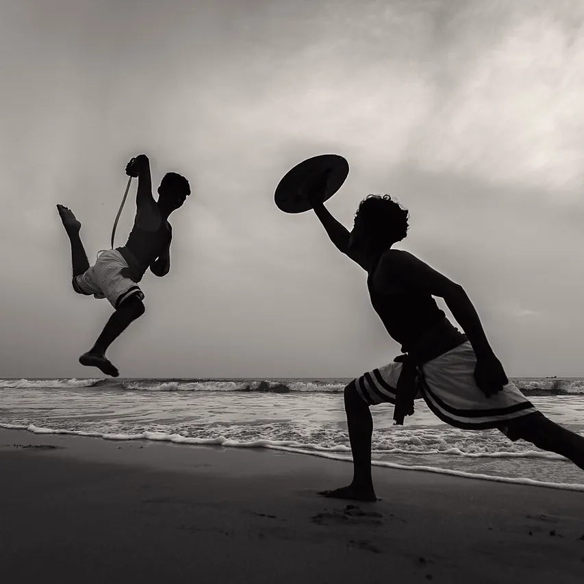

அனைத்து சிகிச்சைகள்சிகிச்சை
வர்ம அக்கு சிகிச்சை
வர்மம் எனும் உயிர்ப்புள்ளிகளைக் கொண்ட தமிழர் மருத்துவ மரபு. மென்மையான அழுத்தம் ஆற்றலை எழுப்பி வலியைத் தணிக்கிறது.

எப்படி உதவுகிறது
- உடல் வலியைத் தணிக்க உதவுகிறது
- இரத்த ஓட்டத்துக்குத் துணைபுரிகிறது
- ஆற்றலை மேம்படுத்துகிறது
- உடல் இயக்கத்தை மேம்படுத்துகிறது
- காயத்திலிருந்து மீளத் துணைபுரிகிறது
- மன அழுத்தத்தையும் பதற்றத்தையும் தணிக்கிறது
நாங்கள் வழங்குபவை
- மூட்டு வலி
- முதுகு வலி
- தலைவலி
- நரம்புப் பராமரிப்பு
- முழு உடல்
உங்களுக்கு ஏற்றது எது என்று எங்கள் மருத்துவரிடம் கேளுங்கள்.
இத்தளத்திலுள்ள தகவல்கள் பொதுவான நல்வாழ்வு விழிப்புணர்வுக்கானவை. இவை நோயறிதலோ, குணமாகும் என்ற உறுதிமொழியோ அல்ல; மருத்துவ ஆலோசனைக்கு மாற்றும் அல்ல. உங்களுக்குப் பரிந்துரைக்கப்பட்ட சிகிச்சையைத் தொடருங்கள், தகுதி பெற்ற மருத்துவரை அணுகுங்கள். எங்கள் சேவைகள் உரிய தகுதிக்கும் சட்ட வரம்புக்கும் உட்பட்டு வழங்கப்படுகின்றன. விளக்கப் படம்.
இதே தூணிலிருந்து

அழகுப் பராமரிப்பு
சருமம், முடி, முகத்துக்கு மூலிகை மற்றும் இயற்கை முறைகள்.

ரிஃப்ளெக்ஸாலஜி
பாதம், கை, காதுகளிலுள்ள அனிச்சைப் புள்ளிகள் அழுத்தி மசாஜ் செய்யப்படுகின்றன.

அக்குபிரஷர்
விரல், கட்டைவிரல், உள்ளங்கையால் உடலின் குறிப்பிட்ட புள்ளிகளை அழுத்தும் பாரம்பரிய சிகிச்சை.

அக்குபங்சர்
மிக மெல்லிய, தூய்மையான ஊசிகள் உடலின் குறிப்பிட்ட புள்ளிகளில் வைக்கப்படுகின்றன.